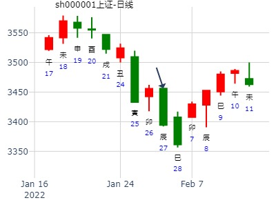
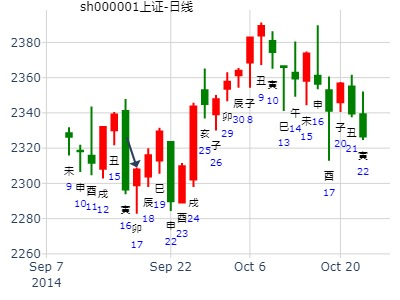
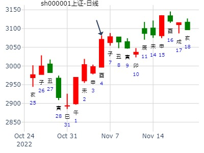

主帖标题: 1月20日上证大盘走势
出生：1976 年 性别：男 占事：股市
排卦：元亨利贞网六爻在线排盘系统 http://www.china95.net
公历起卦时间：2012年1月19日15时50分 (手工指定)
干支：辛卯年 辛丑月 己卯日 壬申时 （日空：申酉）
艮宫：火泽睽 乾宫：火天大有 (归魂)
六神 伏神 本 卦 变 卦
勾陈 父母己巳火 ▅▅▅▅▅ 父母己巳火 ▅▅▅▅▅ 应
朱雀 妻财丙子水 兄弟己未土 ▅▅ ▅▅ 兄弟己未土 ▅▅ ▅▅
青龙 子孙己酉金 ▅▅▅▅▅ 世 子孙己酉金 ▅▅▅▅▅
玄武 兄弟丁丑土 ▅▅ ▅▅ ╳→ 兄弟甲辰土 ▅▅▅▅▅ 世
白虎 官鬼丁卯木 ▅▅▅▅▅ 官鬼甲寅木 ▅▅▅▅▅
腾蛇 父母丁巳火 ▅▅▅▅▅ 应 妻财甲子水 ▅▅▅▅▅
广电运通3个月。睽之大有。.md
时间: 2022-01-09
干支: 辛丑年辛丑月壬戌日 (旬空: 子丑 )
火泽睽 火天大有(归魂)
六神 伏神 本 卦 变 卦
白虎 ▅▅▅▅▅ 父母巳火 ▅▅▅▅▅ 父母巳火 应
腾蛇 妻财子水▅▅ ▅▅ 兄弟未土 ▅▅ ▅▅ 兄弟未土
勾陈 ▅▅▅▅▅ 子孙酉金 世 ▅▅▅▅▅ 子孙酉金
朱雀 ▅▅ ▅▅ 兄弟丑土 Ｘ→ ▅▅▅▅▅ 兄弟辰土 世
青龙 ▅▅▅▅▅ 官鬼卯木 ▅▅▅▅▅ 官鬼寅木
玄武 ▅▅▅▅▅ 父母巳火 应 ▅▅▅▅▅ 妻财子水
主帖标题: 测28日巳日大盘
干支：辛丑年 辛丑月 庚辰日 甲申时 （日空：申酉）
神煞：驿马－寅 桃花－酉 日禄－申 贵人－丑，未
艮宫：火泽睽 乾宫：火天大有 (归魂)
六神 伏神 本 卦 变 卦
螣蛇 父母己巳火 ▅▅▅▅▅ 父母己巳火 ▅▅▅▅▅ 应
勾陈 妻财丙子水 兄弟己未土 ▅▅ ▅▅ 兄弟己未土 ▅▅ ▅▅
朱雀 子孙己酉金 ▅▅▅▅▅ 世 子孙己酉金 ▅▅▅▅▅
青龙 兄弟丁丑土 ▅▅ ▅▅ ╳→ 兄弟甲辰土 ▅▅▅▅▅ 世
玄武 官鬼丁卯木 ▅▅▅▅▅ 官鬼甲寅木 ▅▅▅▅▅
白虎 父母丁巳火 ▅▅▅▅▅ 应 妻财甲子水 ▅▅▅▅▅
空而逢合，兄弟化进生世。
还是看明天止跌回抽，下周一涨。

主帖标题: 《易经脂露》每日更新
1月18日——先涨后跌
起卦公历：2023年1月17日14时30分(北京时间)
起卦农历：二○二二年 十二月 廿六日 未时。
干支： 壬寅年 癸丑月 乙亥日 癸未时 (卦身：丑)丙子
主变卦 火泽睽(艮宫) 之 火天大有(乾宫) [空亡:申、酉]
玄武 ━━━ 父母己巳火 ━━━ 父母己巳火 应
白虎 财子 ━ ━ 兄弟己未土 ━ ━ 兄弟己未土
螣蛇 ━━━ 子孙己酉金 世 ━━━ 子孙己酉金
勾陈 ━ ━× 兄弟丁丑土 ━━━ 兄弟甲辰土 世
朱雀 ━━━ 官鬼丁卯木 ━━━ 官鬼甲寅木
青龙 ━━━ 父母丁巳火 应 ━━━ 妻财甲子水
◇六三:见舆曳，其牛擎，其人天且劓。无初有终。 象曰：见舆曳，位不当也。 无初有终，遇刚也。
天且劓，有反弹。无初有终，终是要跌。反弹因空头位置不当，终跌是因为做空意愿强烈。
3月第1周大盘：睽之大有。.md
ppm555，男，庚申(1980年)，手工指定(起卦方式)
公历：2016年2月28日0时50分，星期日。
干支：丙申年 庚寅月 庚辰日 丙子时 (卦身：酉)
主变卦 火泽睽(艮宫) 之 火天大有(乾宫) [空亡:申、酉]
螣蛇 ▅▅▅▅▅ 父母己巳火 ▅▅▅▅▅ 父母己巳火 应
勾陈 妻财丙子水 ▅▅ ▅▅ 兄弟己未土 ▅▅ ▅▅ 兄弟己未土
朱雀 ▅▅▅▅▅ 子孙己酉金 世 ▅▅▅▅▅ 子孙己酉金
青龙 ▅▅ ▅▅×兄弟丁丑土 ▅▅▅▅▅ 兄弟甲辰土 世
玄武 ▅▅▅▅▅ 官鬼丁卯木 ▅▅▅▅▅ 官鬼甲寅木
白虎 ▅▅▅▅▅ 父母丁巳火 应 ▅▅▅▅▅ 妻财甲子水
未日能冲散月弱之丑土，而涨。8日丑日则开跌。
主帖标题: 06大家一起来，九缠烂打：上证2021.2.22收盘 个位数是几？
上证2021.2.22收盘 个位数是7？
男 占事：没填
公历起卦时间：2021年2月20日16时24分 (电脑自动)
干支：辛丑年 庚寅月 己亥日 壬申时 （日空：辰巳）
艮宫：火泽睽 乾宫：火天大有 (归魂)
六神 伏神 本 卦 变 卦
勾陈 父母己巳火 ▅▅▅▅▅ 父母己巳火 ▅▅▅▅▅ 应
朱雀 妻财丙子水 兄弟己未土 ▅▅ ▅▅ 兄弟己未土 ▅▅ ▅▅
青龙 子孙己酉金 ▅▅▅▅▅ 世 子孙己酉金 ▅▅▅▅▅
玄武 兄弟丁丑土 ▅▅ ▅▅ ╳→ 兄弟甲辰土 ▅▅▅▅▅ 世
白虎 官鬼丁卯木 ▅▅▅▅▅ 官鬼甲寅木 ▅▅▅▅▅
螣蛇 父母丁巳火 ▅▅▅▅▅ 应 妻财甲子水 ▅▅▅▅▅
公历起卦时间：2015年3月16日20时18分 (手工指定)
干支：乙未年 己卯月 辛卯日 戊戌时 （日空：午未）
艮宫：火泽睽 乾宫：火天大有 (归魂)
六神 伏神 本 卦 变 卦
腾蛇 父母己巳火 ▅▅▅▅▅ 父母己巳火 ▅▅▅▅▅ 应
勾陈 妻财丙子水 兄弟己未土 ▅▅ ▅▅ 兄弟己未土 ▅▅ ▅▅
朱雀 子孙己酉金 ▅▅▅▅▅ 世 子孙己酉金 ▅▅▅▅▅
青龙 兄弟丁丑土 ▅▅ ▅▅ ╳→ 兄弟甲辰土 ▅▅▅▅▅ 世
玄武 官鬼丁卯木 ▅▅▅▅▅ 官鬼甲寅木 ▅▅▅▅▅
白虎 父母丁巳火 ▅▅▅▅▅ 应 妻财甲子水 ▅▅▅▅▅
兄弟化进。世爻逢日冲，如果视为暗动，则解释大涨成功。
主帖标题: 2020年4月大盘涨跌卦
求测人：某人，男，庚午(1990年)，自动起卦(起卦方式)
占问事宜：要问的事情
公历：2020年3月31日19时30分，星期二。
神煞：驿马-亥 桃花-午 干禄-子 贵人-卯、巳
干支：庚子年 己卯月 癸酉日 壬戌时 (卦身：酉)
主变卦 火泽睽(艮宫) 之 火天大有(乾宫) [空亡:戌、亥]
白虎 ▅▅▅▅▅ 父母己巳火 ▅▅▅▅▅ 父母己巳火 应
螣蛇 妻财丙子水 ▅▅ ▅▅ 兄弟己未土 ▅▅ ▅▅ 兄弟己未土
勾陈 ▅▅▅▅▅ 子孙己酉金 世 ▅▅▅▅▅ 子孙己酉金
朱雀 ▅▅ ▅▅×兄弟丁丑土 ▅▅▅▅▅ 兄弟甲辰土 世
青龙 ▅▅▅▅▅ 官鬼丁卯木 ▅▅▅▅▅ 官鬼甲寅木
玄武 ▅▅▅▅▅ 父母丁巳火 应 ▅▅▅▅▅ 妻财甲子水
电脑随机一卦
上涨遇阻后回落的亚子。
主帖标题: 600516方大炭素3月1至3月5日（日测）
明天周三涨跌
公历时间：2021年3月2日16时22分
干 支：辛丑年 庚寅月 己酉日 壬申时
旬 空：辰巳 午未 寅卯 戌亥
艮宫：火泽睽 乾宫：火天大有（归魂）
勾陈 ▄▄▄▄▄ 父母己巳火 ▄▄▄▄▄ 父母己巳火 应
朱雀 妻财丙子水 ▄▄ ▄▄ 兄弟己未土 ▄▄ ▄▄ 兄弟己未土
青龙 ▄▄▄▄▄ 子孙己酉金 世 ▄▄▄▄▄ 子孙己酉金
玄武 ▄▄ ▄▄ 兄弟丁丑土 × ▄▄▄▄▄ 兄弟甲辰土 世
白虎 ▄▄▄▄▄ 官鬼丁卯木 ▄▄▄▄▄ 官鬼甲寅木
螣蛇 ▄▄▄▄▄ 父母丁巳火 应 ▄▄▄▄▄ 妻财甲子水
主帖标题: Q4A-1@ 上证3.15收盘走势？
信心上证3.15收盘走势？男 占事：没填
公历起卦时间：2021年3月13日21时15分 (电脑自动)
干支：辛丑年 辛卯月 庚申日 丁亥时 （日空：子丑）
艮宫：火泽睽 乾宫：火天大有 (归魂)
六神 伏神 本 卦 变 卦
螣蛇 父母己巳火 ▅▅▅▅▅ 父母己巳火 ▅▅▅▅▅ 应
勾陈 妻财丙子水 兄弟己未土 ▅▅ ▅▅ 兄弟己未土 ▅▅ ▅▅
朱雀 子孙己酉金 ▅▅▅▅▅ 世 子孙己酉金 ▅▅▅▅▅
青龙 兄弟丁丑土 ▅▅ ▅▅ ╳→ 兄弟甲辰土 ▅▅▅▅▅ 世
玄武 官鬼丁卯木 ▅▅▅▅▅ 官鬼甲寅木 ▅▅▅▅▅
白虎 父母丁巳火 ▅▅▅▅▅ 应 妻财甲子水 ▅▅▅▅▅
主帖标题: 数理卦测3.30 大盘
公历起卦时间：2021年3月29日15时30分 (手工指定)
干支：辛丑年 辛卯月 丙子日 丙申时 （日空：申酉）
艮宫：火泽睽 乾宫：火天大有 (归魂)
六神 伏神 本 卦 变 卦
青龙 父母己巳火 ▅▅▅▅▅ 父母己巳火 ▅▅▅▅▅ 应
玄武 妻财丙子水 兄弟己未土 ▅▅ ▅▅ 兄弟己未土 ▅▅ ▅▅
白虎 子孙己酉金 ▅▅▅▅▅ 世 子孙己酉金 ▅▅▅▅▅
螣蛇 兄弟丁丑土 ▅▅ ▅▅ ╳→ 兄弟甲辰土 ▅▅▅▅▅ 世
勾陈 官鬼丁卯木 ▅▅▅▅▅ 官鬼甲寅木 ▅▅▅▅▅
朱雀 父母丁巳火 ▅▅▅▅▅ 应 妻财甲子水 ▅▅▅▅▅
数理卦。
丑土化进，官卯木弱，妻财有余气。恐跌幅不小。
占事：上海大盘4月2日至4月6日走势
起卦方式：手动摇卦 www.iqing.net 线上排盘系统
公历时间：2007年4月1日9时9分 星期日
干支：丁亥年 癸卯月 乙丑日 辛巳时 (旬空：戌亥)
火泽睽 火天大有(归魂)
玄武 ▅▅▅▅▅ 父母巳火 ▅▅▅▅▅ 父母巳火 应
白虎 妻财子水▅▅ ▅▅ 兄弟未土 ▅▅ ▅▅ 兄弟未土
腾蛇 ▅▅▅▅▅ 子孙酉金 世 ▅▅▅▅▅ 子孙酉金
勾陈 ▅▅ ▅▅ 兄弟丑土 Ｘ→ ▅▅▅▅▅ 兄弟辰土 世
朱雀 ▅▅▅▅▅ 官鬼卯木 ▅▅▅▅▅ 官鬼寅木
青龙 ▅▅▅▅▅ 父母巳火 应 ▅▅▅▅▅ 妻财子水
主帖标题: 580989在2008年走势？
占事: 580989今天走势？起卦方式：手工指定 周易天地www.64gua.com六爻线上排盘系统 公历时间：2008年4月14日2时5分
干支：戊子年 丙辰月 甲申日 乙丑时 旬空：午未 子丑 午未 戌亥
艮宫：火泽睽 乾宫：火天大有（归魂）
六神 伏 神 【本 卦】 【变 卦】
玄武 ▄▄▄▄▄ 父母己巳火 ▄▄▄▄▄ 父母己巳火 应
白虎 妻财丙子水 ▄▄ ▄▄ 兄弟己未土 ▄▄ ▄▄ 兄弟己未土
螣蛇 ▄▄▄▄▄ 子孙己酉金 世 ▄▄▄▄▄ 子孙己酉金
勾陈 ▄▄ ▄▄ 兄弟丁丑土 X-> ▄▄▄▄▄ 兄弟甲辰土 世
朱雀 ▄▄▄▄▄ 官鬼丁卯木 ▄▄▄▄▄ 官鬼甲寅木
青龙 ▄▄▄▄▄ 父母丁巳火 应 ▄▄▄▄▄ 妻财甲子水
占事: 000515攀渝汰业4月20日至24日行情 起卦方式：手工指定
公历时间：2009年4月17日17时10分
农历时间：己丑年 三月二十二日酉时
干支：己丑年 戊辰月 壬辰日 己酉时 旬空：午未 戌亥 午未 寅卯
神煞：驿马─寅 桃花─酉 日禄─亥 贵人─巳，卯
艮宫：火泽睽 乾宫：火天大有（归魂）
六神 伏 神 【本 卦】 【变 卦】
白虎 ▄▄▄▄▄ 父母己巳火 ▄▄▄▄▄ 父母己巳火 应螣蛇 妻财丙子水 ▄▄ ▄▄ 兄弟己未土 ▄▄ ▄▄ 兄弟己未土 勾陈 ▄▄▄▄▄ 子孙己酉金 世 ▄▄▄▄▄ 子孙己酉金 朱雀 ▄▄ ▄▄ 兄弟丁丑土 X-> ▄▄▄▄▄ 兄弟甲辰土 世青龙 ▄▄▄▄▄ 官鬼丁卯木 ▄▄▄▄▄ 官鬼甲寅木 玄武 ▄▄▄▄▄ 父母丁巳火 应 ▄▄▄▄▄ 妻财甲子水
以下是引用老陈测股在2009-4-19 2:50:00的发言：
大盘横盘调整意味着上攻力度更猛
占事:f 起卦方式：手工指定
起卦时间(公历)：2009年4月19日1时7分 农历时间：己丑年 三月二十四日丑时
干 支：己丑年 戊辰月 甲午日 乙丑时 旬 空：午未 戌亥 辰巳 戌亥
兑宫：水山蹇 巽宫：风天小畜
玄武 ▄▄ ▄▄ 子孙戊子水 X-> ▄▄▄▄▄ 妻财辛卯木 白虎 ▄▄▄▄▄ 父母戊戌土 ▄▄▄▄▄ 官鬼辛巳火 螣蛇 ▄▄ ▄▄ 兄弟戊申金 世 ▄▄ ▄▄ 父母辛未土 应勾陈 ▄▄▄▄▄ 兄弟丙申金 ▄▄▄▄▄ 父母甲辰土 朱雀 妻财丁卯木 ▄▄ ▄▄ 官鬼丙午火 X-> ▄▄▄▄▄ 妻财甲寅木 青龙 ▄▄ ▄▄ 父母丙辰土 应X-> ▄▄▄▄▄ 子孙甲子水 世
此卦看。周三酉日应有很大的跌势。整体看涨。
诱多迹象明显。
~~~~~~~~~~~~~~~~~~~~~~~~~~
这是看老陈的卦。和你的卦来比较。涨。
[此贴子已经被作者于2009-4-20 16:01:59编辑过]
睽之大有,上证未来两周？风生水起
时间: 2023-04-07
干支: 癸卯年丙辰月乙未日 (旬空: 辰巳 )
睽 大有(归魂)
六神 伏神 本 卦 变 卦
玄武 ▅▅▅▅▅ 父母巳火 ▅▅▅▅▅ 父母巳火 应
白虎 妻财子水▅▅ ▅▅ 兄弟未土 ▅▅ ▅▅ 兄弟未土
腾蛇 ▅▅▅▅▅ 子孙酉金 世 ▅▅▅▅▅ 子孙酉金
勾陈 ▅▅ ▅▅ 兄弟丑土 Ｘ→ ▅▅▅▅▅ 兄弟辰土 世
朱雀 ▅▅▅▅▅ 官鬼卯木 ▅▅▅▅▅ 官鬼寅木
青龙 ▅▅▅▅▅ 父母巳火 应 ▅▅▅▅▅ 妻财子水
小事吉。
初九：悔亡，丧马勿逐，自复﹔见恶人无咎。
九二：遇主于巷，无咎。
六三：见舆曳，其牛掣，其人天且劓，无初有终。
九四：睽孤，遇元夫，交孚，厉无咎。
六五：悔亡，厥宗噬肤，往何咎。
上九：睽孤， 见豕负涂，载鬼一车， 先张之弧，后说之弧，匪寇婚媾，往遇雨则吉。
彖︰睽，火动而上，泽动而下；二女同居，其志不同行；说而丽乎明，柔进而上行，得中而应乎刚；是以小事吉。天地睽，而其事同也；男女睽，而其志通也；万物睽，而其事类也；睽之时用大矣哉！
出生：没填 年 性别：女 占事：测600326和002648这2个股票明天会上涨吗？（暂时被小套）
公历起卦时间：2015年6月22日17时37分
干支：乙未年 壬午月 己巳日 癸酉时 （日空：戌亥）
神煞：驿马－亥 桃花－午 日禄－午 贵人－子，申
艮宫：火泽睽 乾宫：火天大有 (归魂)
六神 伏神 本 卦 变 卦
勾陈 父母己巳火 ▅▅▅▅▅ 父母己巳火 ▅▅▅▅▅ 应
朱雀 妻财丙子水 兄弟己未土 ▅▅ ▅▅ 兄弟己未土 ▅▅ ▅▅
青龙 子孙己酉金 ▅▅▅▅▅ 世 子孙己酉金 ▅▅▅▅▅
玄武 兄弟丁丑土 ▅▅ ▅▅ ╳→ 兄弟甲辰土 ▅▅▅▅▅ 世
白虎 官鬼丁卯木 ▅▅▅▅▅ 官鬼甲寅木 ▅▅▅▅▅
腾蛇 父母丁巳火 ▅▅▅▅▅ 应 妻财甲子水 ▅▅▅▅▅

航天长峰6.8壬午星期一-6.10甲申何时顶zx？
公历起卦时间：2020年6月10日7时17分 (电脑自动)
干支：庚子年 壬午月 甲申日 戊辰时 （日空：午未）
艮宫：火泽睽 乾宫：火天大有 (归魂)
六神 伏神 本 卦 变 卦
玄武 父母己巳火 ▅▅▅▅▅ 父母己巳火 ▅▅▅▅▅ 应
白虎 妻财丙子水 兄弟己未土 ▅▅ ▅▅ 兄弟己未土 ▅▅ ▅▅
螣蛇 子孙己酉金 ▅▅▅▅▅ 世 子孙己酉金 ▅▅▅▅▅
勾陈 兄弟丁丑土 ▅▅ ▅▅ ╳→ 兄弟甲辰土 ▅▅▅▅▅ 世
朱雀 官鬼丁卯木 ▅▅▅▅▅ 官鬼甲寅木 ▅▅▅▅▅
青龙 父母丁巳火 ▅▅▅▅▅ 应 妻财甲子水 ▅▅▅▅▅

主帖标题: 周五大盘走势
癸巳年戊午月壬申日乙巳时(戌亥空) 癸巳年五月廿八(2013/07/05 09:26)
火泽睽 火天大有
白虎 父母巳火 ／ 父母巳火 ／ 应
妻财子水：腾蛇 兄弟未土 ∥ 兄弟未土 ∥
勾陈 子孙酉金 ／ 世 子孙酉金 ／
朱雀 兄弟丑土 × 兄弟辰土 ／ 世
青龙 官鬼卯木 ／ 官鬼寅木 ／
玄武 父母巳火 ／ 应 妻财子水 ／

主帖标题: 求测股票。。。谢谢
谢谢……好。麻烦版主帮我看看~~~~出生年：1983年 性别：女 占事: 我手中的“丹化”，何时卖出得财？起卦方式：手工指定 周易天地www.64gua.com六爻线上排盘系统 公历时间：2007年8月9日10时54分
干支：丁亥年 戊申月 乙亥日 辛巳时 旬空：午未 寅卯 申酉 申酉
艮宫：火泽睽 乾宫：火天大有（归魂）
玄武 ▄▄▄▄▄ 父母己巳火 ▄▄▄▄▄ 父母己巳火 应
白虎 妻财丙子水 ▄▄ ▄▄ 兄弟己未土 ▄▄ ▄▄ 兄弟己未土
螣蛇 ▄▄▄▄▄ 子孙己酉金 世 ▄▄▄▄▄ 子孙己酉金
勾陈 ▄▄ ▄▄ 兄弟丁丑土 X-> ▄▄▄▄▄ 兄弟甲辰土 世
朱雀 ▄▄▄▄▄ 官鬼丁卯木 ▄▄▄▄▄ 官鬼甲寅木
青龙 ▄▄▄▄▄ 父母丁巳火 应 ▄▄▄▄▄ 妻财甲子水

主帖标题: [原创]每日预测深沪两市大盘方向
公历时间：2008年8月4日9时30分 星期一
干支：戊子年 己未月 丙子日 癸巳时 (旬空：申酉)
火泽睽 火天大有(归魂)
六神 伏神 本 卦 变 卦
青龙 ▅▅▅▅▅ 父母巳火 ▅▅▅▅▅ 父母巳火 应
玄武 妻财子水▅▅ ▅▅ 兄弟未土 ▅▅ ▅▅ 兄弟未土
白虎 ▅▅▅▅▅ 子孙酉金 世 ▅▅▅▅▅ 子孙酉金
腾蛇 ▅▅ ▅▅ 兄弟丑土 Ｘ→ ▅▅▅▅▅ 兄弟辰土 世
勾陈 ▅▅▅▅▅ 官鬼卯木 ▅▅▅▅▅ 官鬼寅木
朱雀 ▅▅▅▅▅ 父母巳火 应 ▅▅▅▅▅ 妻财子水
占事：002009
起卦方式：手动摇卦
公历时间：2013年8月8日8时37分
干 支：癸巳年 庚申月 丙午日 壬辰时
旬 空：午未 子丑 (寅卯) 午未
艮宫：火泽睽 乾宫：火天大有（归魂）
青龙 ▄▄▄▄▄ 父母己巳火 ▄▄▄▄▄ 父母己巳火 应
玄武 妻财丙子水 ▄▄ ▄▄ 兄弟己未土 ▄▄ ▄▄ 兄弟己未土
白虎 ▄▄▄▄▄ 子孙己酉金 世 ▄▄▄▄▄ 子孙己酉金
螣蛇 ▄▄ ▄▄ 兄弟丁丑土 X-> ▄▄▄▄▄ 兄弟甲辰土 世
勾陈 ▄▄▄▄▄ 官鬼丁卯木 ▄▄▄▄▄ 官鬼甲寅木
朱雀 ▄▄▄▄▄ 父母丁巳火 应 ▄▄▄▄▄ 妻财甲子水
试断：才不上卦，兄动化进神收阴

低开后向上震荡尾盘下杀收跌0.08、0.75%的阴线。
出生：没填 年 性别：男 占事：002418康盛股份下午跟明天涨跌
排卦：元亨利贞网六爻在线排盘系统 http://www.china95.net
公历起卦时间：2014年8月5日11时36分 (电脑自动)
干支：甲午年 辛未月 戊申日 戊午时 （日空：寅卯）
神煞：驿马－寅 桃花－酉 日禄－巳 贵人－丑，未
艮宫：火泽睽 乾宫：火天大有 (归魂)
六神 伏神 本 卦 变 卦
朱雀 父母己巳火 ▅▅▅▅▅ 父母己巳火 ▅▅▅▅▅ 应
青龙 妻财丙子水 兄弟己未土 ▅▅ ▅▅ 兄弟己未土 ▅▅ ▅▅
玄武 子孙己酉金 ▅▅▅▅▅ 世 子孙己酉金 ▅▅▅▅▅
白虎 兄弟丁丑土 ▅▅ ▅▅ ╳→ 兄弟甲辰土 ▅▅▅▅▅ 世
腾蛇 官鬼丁卯木 ▅▅▅▅▅ 官鬼甲寅木 ▅▅▅▅▅
勾陈 父母丁巳火 ▅▅▅▅▅ 应 妻财甲子水 ▅▅▅▅▅
《周易》——火泽睽 离上兑下
男 占事：600767运盛实业下周涨跌
公历起卦时间：2014年9月5日16时52分 (电脑自动)
干支：甲午年 壬申月 己卯日 壬申时 （日空：申酉）
艮宫：火泽睽 乾宫：火天大有 (归魂)
勾陈 父母己巳火 ▅▅▅▅▅ 父母己巳火 ▅▅▅▅▅ 应
朱雀 妻财丙子水 兄弟己未土 ▅▅ ▅▅ 兄弟己未土 ▅▅ ▅▅
青龙 子孙己酉金 ▅▅▅▅▅ 世 子孙己酉金 ▅▅▅▅▅
玄武 兄弟丁丑土 ▅▅ ▅▅ ╳→ 兄弟甲辰土 ▅▅▅▅▅ 世
白虎 官鬼丁卯木 ▅▅▅▅▅ 官鬼甲寅木 ▅▅▅▅▅
腾蛇 父母丁巳火 ▅▅▅▅▅ 应 妻财甲子水 ▅▅▅▅▅
主帖标题: 酉月趋势
占事: 000001上证指数 麦站摇卦
起卦方式：手工指定 周易天地www.64gua.com六爻线上排盘系统
公历时间：2014年9月17日9时30分
干支：甲午年 癸酉月 辛卯日 癸巳时
旬空：辰巳 戌亥 午未 午未
艮宫：火泽睽 乾宫：火天大有（归魂）
六神 伏 神 【本 卦】 【变 卦】
螣蛇 ▄▄▄▄▄ 父母己巳火 ▄▄▄▄▄ 父母己巳火 应
勾陈 妻财丙子水 ▄▄ ▄▄ 兄弟己未土 ▄▄ ▄▄ 兄弟己未土
朱雀 ▄▄▄▄▄ 子孙己酉金 世 ▄▄▄▄▄ 子孙己酉金
青龙 ▄▄ ▄▄ 兄弟丁丑土 X-> ▄▄▄▄▄ 兄弟甲辰土 世
玄武 ▄▄▄▄▄ 官鬼丁卯木 ▄▄▄▄▄ 官鬼甲寅木
白虎 ▄▄▄▄▄ 父母丁巳火 应 ▄▄▄▄▄ 妻财甲子水
丑 寅 卯辰 巳 此卦断：丑涨 寅涨 卯跌 辰涨 巳涨 机械 航天 港口实际寅跌卯涨
出生年：年 性别：男 占事: 9月15号至19号的大盘走势 巴蜀之卦
起卦方式：手工指定 周易天地www.64gua.com六爻线上排盘系统
公历时间：2014年9月15日9时24分 农历时间：甲午年 八月二十二日巳时
干支：甲午年 癸酉月 己丑日 己巳时
旬空：辰巳 戌亥 午未 戌亥
神煞：驿马─亥 桃花─午 日禄─午 贵人─子，申
乾宫：山地剥 乾宫：风地观
六神 伏 神 【本 卦】 【变 卦】
勾陈 ▄▄▄▄▄ 妻财丙寅木 ▄▄▄▄▄ 妻财辛卯木
朱雀 兄弟壬申金 ▄▄ ▄▄ 子孙丙子水 世X-> ▄▄▄▄▄ 官鬼辛巳火
青龙 ▄▄ ▄▄ 父母丙戌土 ▄▄ ▄▄ 父母辛未土 世
玄武 ▄▄ ▄▄ 妻财乙卯木 ▄▄ ▄▄ 妻财乙卯木
白虎 ▄▄ ▄▄ 官鬼乙巳火 应 ▄▄ ▄▄ 官鬼乙巳火
螣蛇 ▄▄ ▄▄ 父母乙未土 ▄▄ ▄▄ 父母乙未土 应
此卦暗含涨势已快到顶，退一步蓄势破顶的意思
占事: 9.15--19上证大盘趋势 ppm555之卦
起卦方式：手动摇卦 周易天地www.64gua.com六爻线上排盘系统
公历时间：2014年9月13日9时12分 农历时间：甲午年 八月二十日巳时
干支：甲午年 癸酉月 丁亥日 乙巳时
旬空：辰巳 戌亥 午未 寅卯
神煞：驿马─巳 桃花─子 日禄─午 贵人─酉，亥
震宫：泽雷随（归魂） 巽宫：天雷无妄（六冲）
六神 伏 神 【本 卦】 【变 卦】
青龙 ▄▄ ▄▄ 妻财丁未土 应X-> ▄▄▄▄▄ 妻财壬戌土
玄武 ▄▄▄▄▄ 官鬼丁酉金 ▄▄▄▄▄ 官鬼壬申金
白虎 子孙庚午火 ▄▄▄▄▄ 父母丁亥水 ▄▄▄▄▄ 子孙壬午火 世
螣蛇 ▄▄ ▄▄ 妻财庚辰土 世 ▄▄ ▄▄ 妻财庚辰土
勾陈 ▄▄ ▄▄ 兄弟庚寅木 ▄▄ ▄▄ 兄弟庚寅木
朱雀 ▄▄▄▄▄ 父母庚子水 ▄▄▄▄▄ 父母庚子水 应
此卦震荡加剧，资金充裕，也有突破相
上海大盘升跌9.15-19晴空万里长
甲午 癸酉 丁亥 戊申 (日空:午未 时空:寅卯) (2014/09/13 16:12:42)
公历时间：2014年9月13日16时12分 农历时间：甲午年 八月二十日申时
干支：甲午年 癸酉月 丁亥日 戊申时
旬空：辰巳 戌亥 午未 寅卯
神煞：驿马─巳 桃花─子 日禄─午 贵人─酉，亥
震宫：泽风大过（游魂） 乾宫：天风姤
青龙 ▄▄ ▄▄ 妻财丁未土 X-> ▄▄▄▄▄ 妻财壬戌土
玄武 ▄▄▄▄▄ 官鬼丁酉金 ▄▄▄▄▄ 官鬼壬申金
白虎 子孙庚午火 ▄▄▄▄▄ 父母丁亥水 世 ▄▄▄▄▄ 子孙壬午火 应
螣蛇 ▄▄▄▄▄ 官鬼辛酉金 ▄▄▄▄▄ 官鬼辛酉金
勾陈 兄弟庚寅木 ▄▄▄▄▄ 父母辛亥水 ▄▄▄▄▄ 父母辛亥水
朱雀 ▄▄ ▄▄ 妻财辛丑土 应 ▄▄ ▄▄ 妻财辛丑土 世
震荡后等待机会，适时介入，为戌月准备

占事：中药板块10月走势
公历时间：2014年9月30日11时45分
干 支：甲午年 癸酉月 甲辰日 庚午时
旬 空：辰巳 戌亥 (寅卯) 戌亥
艮宫：火泽睽 乾宫：火天大有（归魂）
玄武 ▄▄▄▄▄ 父母己巳火 ▄▄▄▄▄ 父母己巳火 应
白虎 妻财丙子水 ▄▄ ▄▄ 兄弟己未土 ▄▄ ▄▄ 兄弟己未土
螣蛇 ▄▄▄▄▄ 子孙己酉金 世 ▄▄▄▄▄ 子孙己酉金
勾陈 ▄▄ ▄▄ 兄弟丁丑土 X-> ▄▄▄▄▄ 兄弟甲辰土 世
朱雀 ▄▄▄▄▄ 官鬼丁卯木 ▄▄▄▄▄ 官鬼甲寅木
青龙 ▄▄▄▄▄ 父母丁巳火 应 ▄▄▄▄▄ 妻财甲子水
马后炮准。以同仁堂为例子。跌为主。虽然辰在戌月破。化进为主因。
主帖标题: 永安药业的走势
占事：永安药业走势
排卦：中国六爻同盟专业六爻在线排盘系统 http://www.6yao.com
起卦方式：手工指定
公历时间：2016年09月08日18时48分
干 支：丙申年 丁酉月 癸巳日 辛酉时 日 空：午未
艮宫：火泽睽 乾宫：火天大有（归魂）
白虎 ▅▅▅▅▅ 父母己巳火 ▅▅▅▅▅ 父母己巳火 应
螣蛇 妻财丙子水 ▅▅ ▅▅ 兄弟己未土 ▅▅ ▅▅ 兄弟己未土
勾陈 ▅▅▅▅▅ 子孙己酉金 世 ▅▅▅▅▅ 子孙己酉金
朱雀 ▅▅ ▅▅ 兄弟丁丑土 X ▅▅▅▅▅ 兄弟甲辰土 世
青龙 ▅▅▅▅▅ 官鬼丁卯木 ▅▅▅▅▅ 官鬼甲寅木
玄武 ▅▅▅▅▅ 父母丁巳火 应 ▅▅▅▅▅ 妻财甲子水
占事：宜宾未来二周
时间: 2021-10-22 10时58分
干支: 辛丑年戊戌月癸卯日 (旬空: 辰巳 )
火泽睽 火天大有(归魂)
六神 伏神 本 卦 变 卦
白虎 ▅▅▅▅▅ 父母巳火 ▅▅▅▅▅ 父母巳火 应
腾蛇 妻财子水▅▅ ▅▅ 兄弟未土 ▅▅ ▅▅ 兄弟未土
勾陈 ▅▅▅▅▅ 子孙酉金 世 ▅▅▅▅▅ 子孙酉金
朱雀 ▅▅ ▅▅ 兄弟丑土 Ｘ→ ▅▅▅▅▅ 兄弟辰土 世
青龙 ▅▅▅▅▅ 官鬼卯木 ▅▅▅▅▅ 官鬼寅木
玄武 ▅▅▅▅▅ 父母巳火 应 ▅▅▅▅▅ 妻财子水
六三：见舆曳，其牛掣，其人天且劓，无初有终。
当天大涨，卯冲世爻酉金暗动。下月3日卯又冲了一次。
戌日冲退神能涨。未日冲丑土，但是也在五爻值班，跌。
寅卯日克兄弟小涨涨。
午火冲克伏神压制之飞神，高开阴。未日想冲散丑土，可惜戌月冲不散。
戌日冲变爻倒冲散，而涨。
主帖标题: 测11.7-11 沪市大盘
公历起卦时间：2022年11月4日15时45分 (手工指定)
干支：壬寅年 庚戌月 辛酉日 丙申时 （日空：子丑）
艮宫：火泽睽 乾宫：火天大有 (归魂)
螣蛇 父母己巳火 ▅▅▅▅▅ 父母己巳火 ▅▅▅▅▅ 应
勾陈 妻财丙子水 兄弟己未土 ▅▅ ▅▅ 兄弟己未土 ▅▅ ▅▅
朱雀 子孙己酉金 ▅▅▅▅▅ 世 子孙己酉金 ▅▅▅▅▅
青龙 兄弟丁丑土 ▅▅ ▅▅ ╳→ 兄弟甲辰土 ▅▅▅▅▅ 世
玄武 官鬼丁卯木 ▅▅▅▅▅ 官鬼甲寅木 ▅▅▅▅▅
白虎 父母丁巳火 ▅▅▅▅▅ 应 妻财甲子水 ▅▅▅▅▅
11.4 数理卦测子日行情
信息和上面一致。

主帖标题: [原创]每日预测沪市大盘方向
公历时间：2008年12月22日9时30分 星期一
干支：戊子年 甲子月 丙申日 癸巳时 (旬空：辰巳)
艮宫：火泽睽 乾宫：火天大有（归魂）
青龙 ▅▅▅▅▅ 父母己巳火 ▅▅▅▅▅ 父母己巳火 应
玄武 妻财丙子水 ▅▅ ▅▅ 兄弟己未土 ▅▅ ▅▅ 兄弟己未土
白虎 ▅▅▅▅▅ 子孙己酉金 世 ▅▅▅▅▅ 子孙己酉金
螣蛇 ▅▅ ▅▅ 兄弟丁丑土 ×→ ▅▅▅▅▅ 兄弟甲辰土 世
勾陈 ▅▅▅▅▅ 官鬼丁卯木 ▅▅▅▅▅ 官鬼甲寅木
朱雀 ▅▅▅▅▅ 父母丁巳火 应 ▅▅▅▅▅ 妻财甲子水